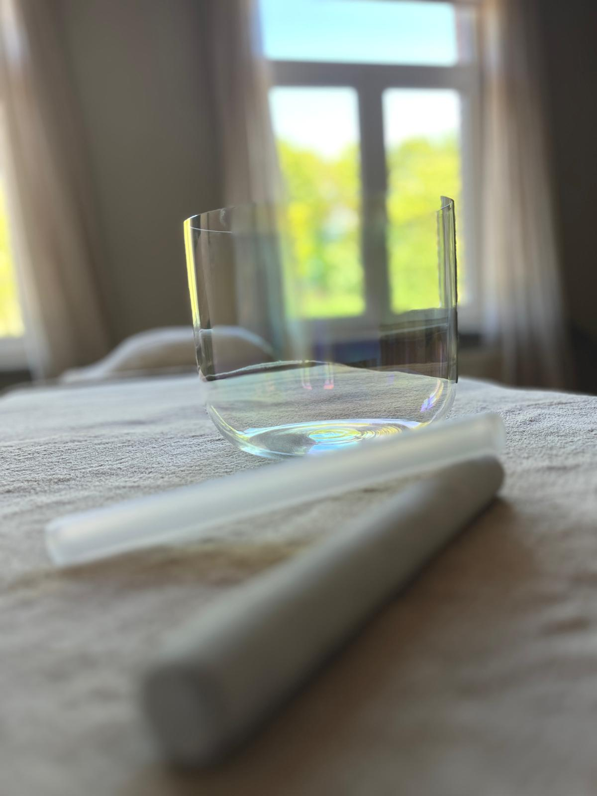
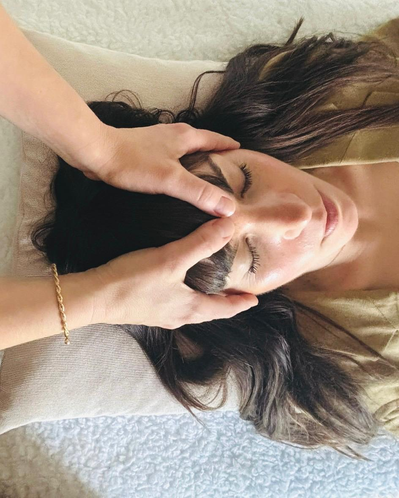
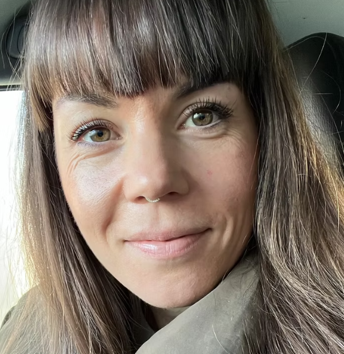
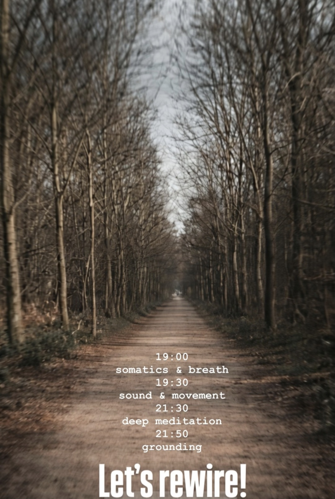
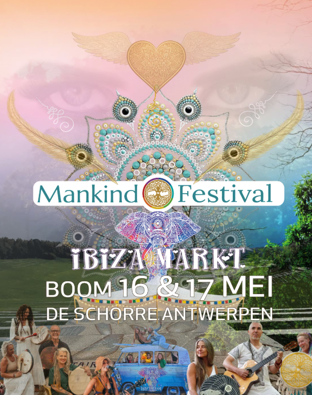

01Reiki
Rust. Ruimte. Herstel.
Een zachte energetische behandeling met aanraking, klank en geur. Een moment om spanning los te laten en opnieuw af te stemmen.
- Duur
- 60 minuten
- Investering
- € 70
- Locatie
- Wilrijk
Reiki & Somatic Dance · Antwerpen
Een zachte plek om te vertragen, opnieuw te voelen en ruimte te maken voor wat in jou wil bewegen.

rust · ruimte · beweging
ANARAH
Je hoeft nergens naartoe. Soms is het genoeg om stil te worden en te luisteren naar wat er vanbinnen beweegt.
Twee wegen, één uitnodiging

01Reiki
Een zachte energetische behandeling met aanraking, klank en geur. Een moment om spanning los te laten en opnieuw af te stemmen.
 02
02
Somatic Dance
Een begeleide reis met vrije beweging, adem en klank. Geen choreografie—jouw lichaam bepaalt het tempo.

Taïs · founder & facilitatorOver ANARAH
Ik ben Taïs. Met Reiki en Somatic Dance begeleid ik je zacht en helder, altijd op het tempo van jouw lichaam.
ANARAH ontstond vanuit het verlangen om een plek te creëren waar je niets hoeft te presteren. Een plek waar stilte, beweging en aandacht je terugbrengen naar jezelf.
“Je lichaam kent de weg. Ik help je om opnieuw te luisteren.”Maak kennis
Samen bewegen
Nieuwe data deel ik via Instagram. Hieronder vind je een glimp van eerdere gatherings.

11 juli 2026 · Koningshooikt
Een Somatic Dance journey om los te laten wat je niet langer hoeft te dragen.

16–17 mei 2026 · De Schorre, Boom
Een vrije bewegingservaring in de warme setting van Mira-cle Space.
Stories
“Recht naar de essentie en kloppend op alle niveaus: de begeleiding, de muziek en de ruimte die je krijgt om te ontdekken wat je nodig hebt. Dit is vrijheid.”
“I have been there, I loved it. Be there, you’re gonna love it. There is only love—take it, share it, and let it grow.”
Let’s connect
Een vraag, een eerste sessie of gewoon even aftasten? Schrijf me. Ik lees persoonlijk mee en antwoord zo snel mogelijk.